화공기사(구)(구) (2008-05-11 기출문제)
1과목: 화공열역학
1. 깁스-두헴(Gibbs-Duhem)식이 다음으로 표시될 경우는? (단, Xi는 i성분의 조성,
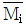
는 i성분의 부분을 특성이다.)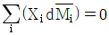
- 압력과 몰수가 일정할 경우
- 몰수와 성분이 일정할 경우
- 몰수와 성분이 같을 경우
- 압력과 온도가 일정할 경우
(정답률: 64%)

2. 절대온도 T의 일정온도에서 이상기체를 1기압에서 10기압으로 가역적인 압축을 한다면 외부가 해야 할 일의 크기는?
- RTㆍln10
- RT2
- 9RT
- 10RT
(정답률: 알수없음)
3. 두성분이 완전 혼합되어 하나의 이상용액을 형성할 때 한성분 i의 화학포텐셜 μi는 μ°(T,P)+RTㆍlnXi으로 표시할 수 있다. 동일 온도와 압력하에서 한성분 i의 순수한 화학포텐셜 μipure는 어떻게 나타낼수 있는가? (단, Xi는 i성분의 몰분율, μ°(T,P)는 같은 T와 P에 있는 이상용액상태의 순수성분 i의 화학 포텐셜이다.)
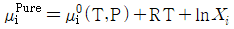
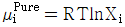
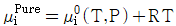
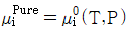
(정답률: 64%)
4. 같은 온도, 같은 압력의 두 종류의 이상기체를 혼합하면 어떻게 되는가?
- 엔트로피(Entropy)가 감소된다.
- 헬름홀츠(Helmholtz) 자유 에너지는 증가한다.
- 엔탈피(Enthalpy)는 증가한다.
- 깁스(Gibbs) 자유에너지는 감소한다.
(정답률: 64%)
5. 이상용액의 활동도 계수 는 어느값을 같는가?
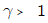
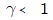
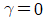
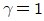
(정답률: 55%)
6. 다음그림은 열기관 사이클이다. T1에서 열을 받고 T2에서 열을 방출할 때 이 사이클의 열효율은 얼마인가?
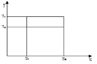
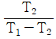
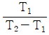
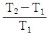
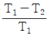
(정답률: 70%)
7. 이상기체간의 반응 A+B
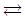
R 이 125℃에서 일어난다. 이 반응의 표준 자유에너지 변화가 1500cal/mol 일 경우, 이반응의 평형 상수 값은?- 0.00238
- 0.15
- 0.864
- -1.9
(정답률: 64%)
8. 열역학 제 2법칙에 관한 사항 중 옳지 않은 것은?
- 같은 온도에서는 가역 사이클로 작동하는 기관의 열효율이 가장 크다.
- 이 법칙을 위반하면서 작동하는 기관을 제 2종 영구 기관이라 한다.
- 계 내의 에너지 총량 보존을 설명하는 법칙이다.
- 외부에서 일이 가해지지 않으면 열은 낮은 곳에서 높은 곳으로 흐를 수 없다.
(정답률: 50%)
9. 어떤 과학자가 자기가 만든 열기관이 80℃와 10℃사이에서 작동하면서 100cal 의 열을 받아 20cal의 유용한 일을 할 수 있다고 주장한다. 이 과학자의 주장에 대한 판단으로 옳은 것은?
- 열역학 제 0법칙에 위배된다
- 열역학 제 1법칙에 위배된다.
- 열역학 제 2법칙에 위배된다
- 타당하다
(정답률: 50%)
10. 몰리에 선도(Mollier diagram)는 어떤 성질들을 기준으로 만든 도표인가?
- 압력과 부피
- 온도와 엔트로피
- 엔탈피와 엔트로피
- 압력과 엔트로피
(정답률: 64%)
11. 다음 중 상태함수로 볼 수 없는 것은?
- 내부에너지
- 열
- 압력
- 엔탈피
(정답률: 59%)
12. 25℃에서 1몰의 이상기체가 20atm에서 1atm로 단열 가역적으로 팽창하였을 때 최종 온도는 약 몇 K인가? (단, 비열비
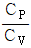
는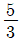
이다.)- 100K
- 90K
- 80K
- 70K
(정답률: 60%)
13. 다음중 과잉 물성치를 가장 옳게 설명한 것은?
- 실제 물성치와 동일한 온도, 압력 및 조성에서 이상용액 물성치와의 차이이다.
- 이상용액의 물성치와 표준상태에서의 실제 물성치와의 차이이다.
- 표준상태에서의 이상용액의 물성치와 특정상태에서의 실제 물성치와의 차이이다.
- 실제 물성치와 표준상태에서의 실제 물성치와의 차이이다.
(정답률: 알수없음)
14. 20℃ 1atm에서 아세톤의 부피팽창계수 β는 1.487×10-3℃-3, 등온압축계수 k는 62×10-6atm-1이다. 아세톤을 정적하에서 20℃, 1atm으로부터 30℃까지 가열하였을 때 압력은 약 몇 atm인가? (단, β와 k의 비는 항상 일정하다고 가정한다.)
- 12.1
- 24.1
- 121
- 241
(정답률: 50%)
15. 다음 P-T선도에서 이상기체의 가역단열 압축과정을 나타내는 선은?
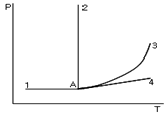
- 1-A
- A-2
- A-3
- A-4
(정답률: 46%)
16. 우주를 고립계라고 할 때 다음 중 옳은 설명은?
- 우주내의 엔트로피는 증가하고 있다.
- 우주내의 엔트로피는 감소하고 있다.
- 우주내의 엔트로피는 감소도 증가도 하지 않는다.
- 우주내의 엔트로피는 그 정확한 값을 예측할 수 있다.
(정답률: 50%)
17. 다음중 공기 표준 오토사이클에 대한 설명으로 옳은 것은?
- 2개의 단열과정과 2개의 정적과정으로 이루어진 불꽃점화 기관의 이상사이클 이다.
- 정압, 정적, 단열과정으로 이우러진 압축점화 기관의 이상사이클이다.
- 2개의 단열과정과 2개의 정압과정으로 이루어진 가스 터빈의 이상사이클이다.
- 2개의 정압과정과 2개의 정적과정으로 이루어진 증기 원동기의 이상사이클이다.
(정답률: 55%)
18. 비가역과정에 있어서 다음식 중 옳은 것은? (단, S는 엔트로피 Q는 열량 T는 절대온도이다.)
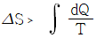
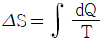
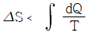
- △S=0
(정답률: 알수없음)
19. 수증기와 질소의 혼합기체가 물과 평형에 있을 때 자유도 수는?
- 0
- 1
- 2
- 3
(정답률: 55%)
20. 1kg의 질소가스가 2.3atm, 367K에서 PV1.3=const.의 폴리트로픽 공정 중 정적과정으로 압력이 2배가 될 때 이 가스의 내부 에너지 변화는 약 몇 kcal/kg 인가? (단, 이 가스의 정압비열 Cp는 0.25kcal/kgㆍk, 정적비열 CV는 0.18kcal/kgㆍK이다.)
- 0.18
- 0.25
- 1.34
- 11.46
(정답률: 46%)
2과목: 화학공업양론
21. NH3를 다음의 반응에 의해 NO로 산화한다. 시간당 NO 30kg을 생성하기 위하여 30% 과잉 산소를 공급할 때 공급산소의 양은 시간당 몇 kg 인가?
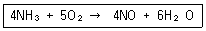
- 52
- 40
- 27
- 20
(정답률: 10%)
22. 내경 5cm의 파이프에 비중이 1.2인 원유가 3.5m/s 의 속도로 흐를 때 단위면적당 질량 속도는 몇 kg/m2ㆍs 인가?
- 1336
- 2356
- 3150
- 4200
(정답률: 알수없음)
23. CH4(g)의 표준생성열은 몇 kcal/mol 인가? (단, C와 O2의 반응으로부터 구한 CO2(g)의 표준생성열은 94.1kcal/mol, H2와 O2의 반응으로부터 구한 H2O(L)의 표준생성열은 68.3kcal/mol, CH4(g)의 표준연소열은 212.8kcal/mol이다.)
- -17.9
- 17.9
- 35.8
- -35.8
(정답률: 19%)
24. 표준상태에서 공기의 밀도는 몇 g/L 인가? (단, 공기의 몰백분율은 80%의 질소와 20%의 산소로 구성되어 있다.)
- 1.12
- 1.21
- 1.29
- 1.52
(정답률: 알수없음)
25. 질소의 정압 몰열용량 Cp[J/molㆍk]가 다음과 같고 1mol의 질소를 1atm하에서 600℃로부터 20℃로 냉각하였을 때 발생하는 열량은 약 몇 J인가? (단, R은 상기체상수이다.)
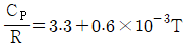
- 17600
- 27600
- 37600
- 47600
(정답률: 알수없음)
26. A성분과 B성분의 Binary system에서 기상과 액상이 평형관계에 있다고 한다면 A성분 기상의 몰분율 YA에 관한 일반식은? (단, 는 B성분에 대한 A성분의 휘발도이고, X는 액체의 몰분율이다.)
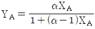
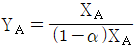
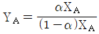
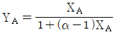
(정답률: 20%)
27. 주어진 계에서 기체 분자들이 반응하여 새로운 분자가 생성되었을 때 원자 백분율 조성에 대한 설명으로 옳은 것은?
- 그 계의 압력변화에 따라 변화한다.
- 그 계의 온도 변화에 따라 변화한다.
- 그 계내에서 화학반응이 일어날 때 변화한다.
- 그 계내에서 화학 반응에 관계없이 일정하다
(정답률: 10%)
28. 포스겐가스를 만들기 위하여 CO가스 1.2몰과 Cl2 가스 1몰을 다음 반응식과 같이 촉매하에서 반응시킬 때 전환율이 90% 라면 반응 후 총 몰수는 몇 몰인가?
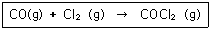
- 1.1
- 1.2
- 1.3
- 1.4
(정답률: 알수없음)
29. 물의 3중점에 대한 설명 중 옳은 것은?
- 3중점이 존재하는 상태를 규정하기 위한 변수의 수는 3개이다.
- 3중점이 존재하는 상태는 임의로 변화될 수 있다.
- 3중점에서 계의 자유도는 1로서 압력만이 독립변수이다.
- 기체-고체, 기체-액체, 고체-액체 선이 서로 교차하는 점이다.
(정답률: 20%)
30. 30℃, 760mmHg에서 공기의 수증기압이 25mmHg이고, 이 온도에서 포화수증기압은 0.0433kgf/cm2이다. 이때 상대 습도는 약 몇 %인가?
- 71.6
- 78.5
- 87.4
- 92.7
(정답률: 30%)
31. 프로판가스와 부탄가스를 액화한 혼합물이 30℃에서 프로판과 부탄의 몰비가 4:1로 되었다면 이 용기내 압력은 약 몇 atm인가? (단, 30℃에서 프로판의 증기압은 9000mmHg, 부탄의 증기압은 2400mmHg이다.)
- 50
- 20
- 10
- 4
(정답률: 20%)
32. 1000kg의 물체가 50m높이에서 지상으로 떨어질때 발생하는 열량은 몇 J인가?(오류 신고가 접수된 문제입니다. 반드시 정답과 해설을 확인하시기 바랍니다.)
- 4.9
- 49
- 490
- 4900
(정답률: 알수없음)
33. 정상상태로 흐르는 유체가 유로의 확대된 부분을 흐를 때 변화하지 않는 것은?
- 유량
- 유속
- 압력
- 유동단면적
(정답률: 알수없음)
34. 액체염소 40kg이 표준상태에서 증발했을 때 약 몇 m3의 Cl2 가스가 생성되는가? (단, Cl2의 분자량은 70.9이다.)
- 10.6
- 11.6
- 12.6
- 13.6
(정답률: 19%)
35. 18℃에서 액체 A의 엔탈피를 0이라 가정하고 150℃에서 A증기의 엔탈피를 구하면 약 몇 cal/g인가? (단,. 엑체 A의 비열은 0.44cal/gㆍ℃ , 증기 A의 비열은 0.32cal/gㆍ℃, 100℃에서 증발열은 86.5cal/g)
- 70
- 139
- 200
- 280
(정답률: 10%)
36. 에너지 수지식은 다음 중 어느 법칙에 기인하는 것인가?
- 열역학 제 1법칙
- 열역학 제 2법칙
- 열역학 제 3법칙
- 열역학 제 0법칙
(정답률: 30%)
37. 아세톤 15vol%를 함유하는 벤젠과의 혼합물이 있다. 20℃ 760mmHg에서 벤젠의 분압은 몇 atm인가?
- 0.15
- 0.35
- 0.85
- 0.95
(정답률: 20%)
38. 섭씨온도 단위를 대체하는 새로운 온도 단위를 정의하여 1기압 하에서 물이 어는 온도를 새로운 온도 단위에서는 10도로 선택하고 물이 끓는 온도를 130도로 정하였다. 섭씨 20도는 새로운 온도 단위로 환산하면 몇 도 인가?
- 30
- 34
- 38
- 42
(정답률: 알수없음)
39. 농도가 5%인 소금수용액 1kg을 1%인 소금수용액으로 희석하여 3%인 소금수용액을 만들고자 할 때 필요한 1% 소금수용액의 질량은 몇 kg인가?
- 1.0
- 1.2
- 1.4
- 1.6
(정답률: 19%)
40. 30℃ 742mmHg에서 수증기로 포화된 H2가스가 2300cm3의 용기 속에 들어 있다. 30℃, 742mmHg에서 순 H2가스의 용적은 약 몇 cm3인가? (단, 30℃에서 포화수증기압은 32mmHg이다.)
- 2200
- 2090
- 1880
- 1170
(정답률: 10%)
3과목: 단위조작
41. 상대휘발도에 관한 설명 중 틀린 것은?
- 휘발도는 어느 성분의 분압과 몰분율의 비로 나타낼수 있다.
- 상대휘발도는 2물질의 순수성분 증기압의 비와 같다.
- 상대휘발도가 클수록 증류에 의한 분리가 용이하다.
- 상대휘발도는 액상과 기상의 조성에는 무관하다.
(정답률: 알수없음)
42. 파이프 속을 층류상태로 흐르는 어떤 점성액체의 평균속도가 10cm/s이고 파이프 양끝 의 압력차와 파이프의 내경은 각각 0.6기압, 2cm이다 만일 동일한 길이로 파이프 양끝의 압력차를 0.3기압으로 줄이고 내경이 4cm인 것으로 바꾸면 액체의 평균 속도는 몇 cm/s가 되겠는가?
- 10
- 20
- 40
- 80
(정답률: 10%)
43. NNU(Nusselt number)의 정의로서 옳은것은? (단, Nst는 stanton수, Npr은 prandtl, k는 열전도도, D는 지름, h는 개별열전달 계수, NRE는 레이놀즈수 이다)
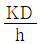
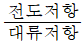
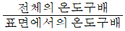
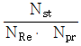
(정답률: 10%)
44. 확산에 의한 물질전달현상을 나타낸 Fick의 법칙처럼 전달속도, 구동력 및 저항 사이의 관계식으로 일반화되는 점에서 유사성을 갖는 법칙은 다음중 어느 것인가?
- stefan-Boltzman 법칙
- Henry 법칙
- Fourier 법칙
- Raoult 법칙
(정답률: 10%)
45. 면적이 0.25m2인 250℃ 상태의 물체가 있다 50℃ 공기가 그 위에 있을때 전열속도는 약 몇 kw인가? (단, 대류에 의한 열전달계수는 30w/m2ㆍ℃)
- 1.5
- 1.875
- 1500
- 1875
(정답률: 알수없음)
46. 혼합조작에서 혼합초기, 혼합도중, 완전이상혼합시 각 균일도 지수의 값을 옳게 나타낸 것은? (단, 균일도 지수는
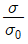
이며 σ는 혼합 도중의 표준편차, σ0는 혼합 전의 최초의 표준편차이다.)- 혼합초기: 0, 혼합도중: 0에서 1사이의 값, 완전이상혼합: 1
- 혼합초기: 1, 혼합도중: 0에서 1사이의 값, 완전이상혼합: 0
- 혼합초기와 혼합도중: 0에서 1사이의 값, 완전이상혼합: 1
- 혼합초기: 1, 혼합도중: 0, 완전이상혼합: 1
(정답률: 0%)
47. 상계점(plait point)에 대한 설명으로 옳지 않은 것은?
- 이점에서 2상이 1상이 된다.
- 이 점에서는 추출이 불가능하다.
- 대응선(Tie line)의 길이가 0이다.
- 이 점을 경계로 주제성분이 많은 쪽이 추진상이다.
(정답률: 알수없음)
48. 다음 x-y 도표에서 최소 환류비를 결정하기 위한 농축부 조작선은 어느 것인가?
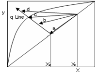
- a
- b
- c
- d
(정답률: 0%)
49. 1기압에서 메탄올의 몰 분율이 0.5인 수용액을 증류하면 평형증기에서 메탄올의 몰 분율이 0.8로 된다. 메탄올의 물에 대한 상대 휘발도는 얼마인가?
- 2
- 4
- 6
- 10
(정답률: 10%)
50. 비중 0.9 점도 1poise의 유체를 직경 30.5cm의 배관을 통하여 10m3/h로 수송한다 이 때 레이놀즈수는 약 얼마인가?
- 104
- 232
- 1160
- 2321
(정답률: 0%)
51. 공극률(porosity)이 0.4인 충전탑 내를 유체가 유효속도(superficial velocity) 0.8m/s로 흐르고 있을 때 충전탑내의 평균 속도는 몇 m/s 인가?
- 0.3
- 0.8
- 1.2
- 2.0
(정답률: 0%)
52. 평면판에서 유동경계층(hydrodynamic boundary layer)과 열경계층(thermal boundary layer)이 같아질 때 프란틀수(prandtl NO.)는 어떤 값을 가지는가?
- ∞
- 100
- 1
- 0
(정답률: 0%)
53. 단일효용 증발관(single effect evaporator)에서 어떤 물질 10% 수용액을 50% 수용 으로 농축한다. 공급용액은 55000kg/h 공급용액의 온도는 52℃ 수증기의 소비량은 4.75×104kg/h 일때 이 증발기의 경제성은?
- 0.895
- 0.926
- 1.0⑤
- 1.084
(정답률: 알수없음)
54. 액체와 기체간의 접촉을 위한 일반적인 기체흡수탑에서 편류(channelling)을 최소화 하는 방법으로 가장 적절한 것은?
- 탑 지름을 충전물 지름과 같게 한다.
- 탑지름을 충전물 지름의 2배 이하로 한다.
- 탑지름을 충전물 지름의 2~4배가 되게 한다.
- 탑지름을 충전물 지름의 8~10배 정도로 한다.
(정답률: 0%)
55. 원관내 25℃의 물을 65℃까지 가열하기 위해서 100℃의 포화수증기를 관 외부로 도입하여 그 응축열을 이용하고 100℃의 응축수가 나오도록 하였다. 이때 대수평균 온도차는 몇 ℃인가?
- 0.56
- 0.85
- 52.5
- 55.5
(정답률: 0%)
56. 다음 중 점도가 큰 액체를 이송하는데 가장 적합한 정변위 펌프는?
- 제트펌프
- 기어펌프
- 에어 리프트펌프
- 터빈펌프
(정답률: 10%)
57. 다음 중 공비 혼합물을 분리시키는 특수한 증류방법이 아닌 것은?
- 푸르푸랄을 이용한 벤젠과 사이클로헥산의 분리
- 추출증류를 이용한 분리
- 벤젠을 이용한 에탄올과 물의 분리
- 수증기증류를 이용한 분리
(정답률: 10%)
58. 농축조작선 방정식에서 환류비가 R일때 조작선의 기울기를 옳게 나타낸 것은? (단, Xw는 탑저 제품 몰분율이고, XD는 탑상 제품 몰분율이다.)
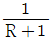
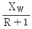
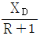
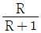
(정답률: 10%)
59. 다음 중 고체 내부의 수분이 확산에 의하여 건조되는 단계로 재료의 건조특성이 단적으로 표시되는 기간은?
- 재료 대기기간
- 재료 예열기간
- 항율 건조기간
- 강률 건조기간
(정답률: 0%)
60. 다음 그림과 같은 축소관에 물이 흐르고 있다. 1지점에서의 안지름이 0.25m, 평균유속이 2m/s일때 안지름이 125m인 2지점에서의 평균유속은 몇 m/s인가? (단, 축소에 의한 손실은 없다고 가정한다.)
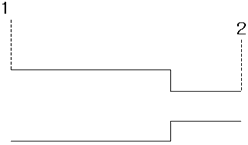
- 4
- 6
- 8
- 12
(정답률: 0%)
4과목: 반응공학
61.
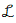
{f(t)}=F(s)일때 최종치 정리를 옳게 나타낸 것은?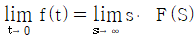
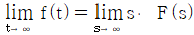
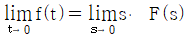
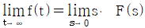
(정답률: 17%)
62. 수은을 유리관에 넣어서 만든 수은온도계의 비정상상태 에너지 수지식을 옳게 나타낸 식은? (단, 열전달을 위한 유리관의 표면적을 A, 수은의 열용량을 C , 유리관 안에 있는 수은의 질량은 m, 수은온도계와 외부 공기와의 열전달계수는 h, 수은온도계의 온도는 T, 외부공기의 온도는 S, 시간은 t 이다)
- mCT = hA(S-T)
- mCT = hA (T-S)
- mC dT/dt = hA (S-T)
- mC dT/dt = hA (T-S)
(정답률: 알수없음)
63. f(t)를 라플라스 변환한 결과, 다음과 같은 식을 얻었다. 이로부터 f(t)를 구한 것으로 옳은 것은?
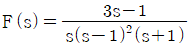
- tet+e-t-1
- tet-e-t-1
- te-t-et-1
- -te-t-et
(정답률: 알수없음)
64. 이득이 1이고 시간상수가 τ인 1차계의 bode 선도에서 corner frequency
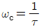
일 경우 진폭비 AR의 값은 얼마인가?- √2
- 1
- 0
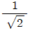
(정답률: 알수없음)
65. 그림과 같이 출구흐름과 두 탱크의 연결부위에 고정된 열림을 가진 밸브가 설치된 두개의 저장탱크에서 입력 흐름에 대한 계단 응답 특성의 설명 중 틀린 것은?
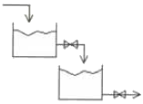
- 2번째 탱크의 높이는 시간에 따라 진동할 수 있다.
- 각 탱크의 높이는 각 탱크의 입력에 대해 1차 전달 함수로 표시된다.
- 2번째 탱크의 높이는 첫 번째 탱크의 높이 변화보다 느린 특성을 보인다.
- 두탱크가 실린더 형태이고 밑면적과 밸브저항이 같으면 critically damped 된 특성을 보인다.
(정답률: 0%)
66.
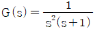
인 계의 단위 임펄스 응답은?- t-1+e-t
- t+1+e-t
- t-1-e-t
- t+1-e-t
(정답률: 알수없음)
67. 다음 중 순수한 전달지연 (transportation lag)에 대한 전달 함수는?
- G(s)=e-τs
- G(s)=τe-τs
(정답률: 10%)
68. 비례-미분제어장치의 전달함수의 형태를 옳게 나타낸 것은? (단, K는 gain, τ는 시간정수이다)
- Kτs
(정답률: 알수없음)
69. 1차계의 sin 응답에서 ωτ가 증가되었을 때 나타나는 영향을 옳게 설명한 것은?(단, ω는 각 주파수, τ는 시간정수, AR은 진폭비, |φ|는 위상각의 절대값 이다.)
- AR은 증가하나 |φ|는 감소한다.
- AR, |φ| 모두 증가한다.
- AR은 감소하나 |φ|는 증가한다.
- AR, |φ|는 모두 감소한다.
(정답률: 알수없음)
70. 에서 ω가 아주 작을 때 즉 ω→0일 때의 위상각은?
- -90°
- 0˚
- +90˚
- +180°
(정답률: 0%)
71. 안정한 closed loop 에 대한 설명 중 옳은 것은?
- error 가 시간이 경과함에 따라 감소한다.
- error가 시간이 경과함에 따라 일정해진다.
- error가 시간이 경과함에 따라 커진다.
- error가 초기에는 일정하나 점차적으로 커진다.
(정답률: 알수없음)
72. 다음중 1차계에서 시상수에 관한 커패시턴스와저항의 관계를 식으로 옳게 나타낸 것은?
(정답률: 9%)
73. 1차계의 단위계단응답에서 시간 t 가 2τ일때 퍼센트 응답은 약 얼마인가? (단, τ는 1차 계의 시간상수이다.)
- 50%
- 63.2%
- 86.5%
- 95%
(정답률: 19%)
74. 공정의 제어 성능을 적절히 발휘하는 데에 장애가 되는 요소가 아닌 것은?
- 측정변수와 피제어 변수의 일치
- 제어밸브의 무반응 영역
- 공정 운전상의 제약
- 공정의 지연시간
(정답률: 10%)
75. 비례제어기를 이용하는 1차공정의 제어구조에서 총괄 전달함수는 로 주어진다. R에 크기 A 인 계단변화가 도입되었을 경우 offset은 어떻게 나타내는가? (단, Y는 공정의 출력, R은 설정점이다.)
- A(1-K)
- A(K-1)
(정답률: 10%)
76. 그림과 같은 블록 다이아그램으로 표시되는 제어계에서 R과 C간의 관계를 하나의 블록으로 나타낸 것은? (단, 이다.)
(정답률: 알수없음)
77. 그림의 블록선도에서 출력 Y1(s)와 Y2(s)의 표현으로 옳은 것은?
(정답률: 10%)
78. PID제어가 조율에 관한 내용 중 옳은 것은?
- 시상수가 작고 측정잡음이 큰 공정에는 미분동작을 크게 설정한다.
- 시간지연이 큰 공정은 미분과 적분동작을 모두 크게 설정한다.
- 적분공정의 경우 제어기의 적분동작을 더욱 크게 설정한다.
- 시상수가 작을수록 미분동작은 작게 적분동작은 크게 설정한다.
(정답률: 알수없음)
79. 전달함수가 와 같은 2차계의 단위계단(unit step)응답은 다음중 어느 것인가?
(정답률: 10%)
80. 증류탑의 일반적인 제어에서 공정출력(피제어) 변수에 해당하지 않는 것은?
- 유출물 조성
- 증류탑의 압력
- 환류비
- 잔류물의 유속
(정답률: 0%)
5과목: 공정제어
81. 수은법에 의한 NaOH 제조에 있어서 아말감 중의 Na의 함유량이 많아지면 어떤 결과를 가져오는가?
- 아말감의 유동성이 좋아진다.
- 아말감의 분해속도가 느려진다.
- 전해실 내에서 수소가스가 발생한다.
- 불순물의 혼입이 많아진다.
(정답률: 0%)
82. 다음 중 황산 제조공업에서의 바나듐 촉매 작용기구로서 가장 거리가 먼 것은?
- 원자가의 변화
- 화학변화에 의한 중간생성물의 생성
- 산성의 피로인산염 생성
- 흡수작용
(정답률: 19%)
83. 다음 중 유리기 연쇄반응으로 일어나는 반응은?
- CH2=CH2+H2 → CH3-CH3
- CH4+Cl2 → CH3Cl + HCl
- CH2= CH2 + Br2 → CH2Br - CH2Br
(정답률: 28%)
84. 다음중 Nylon-6 제조의 주된 원료로 사용되는 것은?
- 카프로락탐
- 세바크산
- 아디프산
- 헥사메틸렌디아민
(정답률: 20%)
85. 암모니아 산화법에 의한 질산 제조에서 백금-로듐(Pt-Rh) 촉매에 대한 설명 중 옳지않은 것은?
- 백금(Pt) 단독으로 사용하는 것보다 수명이 연장된다.
- 촉매 독물질로서는 비소, 유황등이 있다.
- 동일 온도에서 로듐(Rh) 함량이 10%인 것이 2%인 것보다 전화율이 낮다.
- 백금(Pt) 단독으로 사용하는 것보다 내열성이 강하다.
(정답률: 20%)
86. 다음 중 p형 반도체를 제조하기 위해 실리콘에 소량 첨가하는 물질은?
- 비소
- 안티몬
- 인듐
- 비스무스
(정답률: 9%)
87. 염화수소 가스의 직접 합성 시 화학반응식이 다음과 같을 때 표준상태 기준으로 200L의 수소가스를 연소시키면 발생되는 열량은 약 몇 kcal 인가?
- 365
- 394
- 407
- 603
(정답률: 28%)
88. 다음 중 석유류의 불순물인 황, 질소, 산소 제거에 사용되는 방법은?
- Coking process
- Visbreaking process
- Hydrotreating process
- Isomerization process
(정답률: 알수없음)
89. 석유류에서 접촉분해 반응의 특징이 아닌 것은?
- 고체산을 사용한다.
- 대부분 반응은 라디칼 기구로서 진행한다.
- 디올레핀은 거의 생성되지 않는다.
- 분해 생성물은 탄소수 3개 이상의 탄화수소가 많이 생성된다.
(정답률: 19%)
90. 다음 중 주로 아스팔트 도로 포장에 사용되는 것은?
- 천연아스팔트
- 직류아스팔트
- 카본블랙
- 파라핀왁스
(정답률: 알수없음)
91. 폐수처리나 유해가스를 효과적으로 처리할 수 있는 광촉매를 이용한 처리기술이 발달되고 있는데, 다음 중 광촉매로 많이 사용되고 있는 물질로 아나타제, 루틸등의 결정상이 존재하는 것은?
- MgO
- CuO
- TiO2
- FeO
(정답률: 알수없음)
92. 질산제조에서 암모니아 산화에 사용되는 촉매에 대한 설명 중 옳은 것은?
- 가장 널리 사용되는 것은 Pt-Bi 이다.
- PtrP의 일반적인 수명은 1개월 정도이다.
- 공업적으로 Fe-Bi계는 작업범위가 가장 넒다.
- 산화코발트의 조성은 CO3O4이다.
(정답률: 알수없음)
93. 다음 물질 중 벤젠의 술폰화 반응에 사용되는 물질로 가장 적합한 것은?
- 묽은 염산
- 클로로술폰산
- 진한 초산
- 발연 황산
(정답률: 19%)
94. 가솔린 유분 중에서 휘발성이 높은 것을 의미하고 한국 및 유럽의 석유화학공업에서 분해에 의해 에틸렌 및 프로필렌 등의 제조의 주된 공업원료로 사용되고 있는 것은?
- 경유
- 등유
- 나프타
- 중유
(정답률: 알수없음)
95. HNO3 제조에서 탈색탑의 주요 역할은?
- 질소산화물의 제거
- 금속산화물의 제거
- 유기물의 제거
- NH3의 제거
(정답률: 30%)
96. 에틸알코올과 브롬화칼륨을 H2SO4 존재하에서 반응시키면 생성되는 주생성물은?
- C2H4Br
- C2H5OBr
- C2H5Br
- C2H5-O-C2H5
(정답률: 34%)
97. 요소비료의 제조방법 중 카비메이트 순환방식의 제조방법으로 약 210℃, 400atm의 비교적 고온, 고압에서 반응시키는 것은?
- IG법
- Inventa 법
- Du Pont 법
- CCC법
(정답률: 10%)
98. 니트로 화합물 중 트리니트로톨루엔에 관한 설명으로 틀린 것은?
- 물에 매우 잘 녹는다.
- 톨루엔을 니트로화하여 제조할 수 있다.
- 폭발물질로 많이 이용된다.
- 공업용 제품은 담황색 결정형태이다.
(정답률: 알수없음)
99. 암모니아 합성 공업의 원료 가스인 수소가스 제조 공정에서 2차 개질 공정의 주 반응은?
- CO + H2O → CO2 + H2
(정답률: 알수없음)
100. 소금물을 전기분해하여 공업적으로 가성소다를 제조할 때 적당한 방법은?
- 격막법
- 침전법
- 건식법
- 중화법
(정답률: 10%)
6과목: 화학공업개론
101. 화학평형에서 열역학에 의한 평형상수에 주된 영향을 미치는 것은?
- 계의 온도
- 불활성물질의 존재 여부
- 반응속도론
- 계의 압력
(정답률: 19%)
102. 다음 중 균일계 반응에 가장 가까운 반응은?
- 석탄의 연소반응
- 광석의 배소반응
- 기체-엑체의 흡수 반응
- 기체-기체의 가스반응
(정답률: 알수없음)
103. 가역 단분자 반응 R에서 평형상수 KC와 평형 진화율 XAe 와의 관계는? (단, CRO=0 이고, 팽창계수 εA 는 0이다)
(정답률: 19%)
104. 다음의 액체상 1차 반응이 plug flow 반응기 (PFR) 와 mixed flow 반응기(MFR)에서 각각 일어난다. 반응물 A의 전화율을 똑같이 80%로 할 경우 필요한 MFR의 부피는 PFR부피의 약 몇 배인가?
- 5.0
- 2.5
- 0.5
- 0.2
(정답률: 28%)
1⑤. 336K에서 원하는 전화율을 얻는데 30분 걸리는 n차의 비가역 화학반응이 있다. 이 반응의 활성화에너지가 422000J/mol 일 때 347K에서 같은 전화율을 얻는데 약 몇 분의 시간이 걸리는가?
- 0.25
- 0.50
- 0.75
- 1.00
(정답률: 0%)
106. 균일계 촉매반응과 불균일계 촉매반응에 대한 설명으로 옳지 않는 것은?
- 불균일계 촉매반응은 2개 이상의 상이 수반된다.
- 불균일계 촉매반응은 확산저항이 있다..
- 불균일계 촉매반응에서는 촉매와 반응물의 계면이 존재한다.
- 균일계 촉매반응에서는 흡착 및 확산이 일어나고 이것은 반응속도에 가장 중요한 변수이다.
(정답률: 10%)
107. 물리적 흡착에 대한 설명으로 가장 거리가 먼 것은?
- 다분자 층 흡착이 가능하다.
- 활성화 에너지가 작다.
- 가역성이 낮다.
- 고체에서 일어난다.
(정답률: 알수없음)
108. 다음 그림은 농도-시간의 곡선이다. 이 곡선에 해당하는 반응식을 옳게 나타낸 것은?
(정답률: 28%)
109. 기체 - 고체 비균일상 반응의 농도 분포 곡선이 다음 그림과 같으면, 이 때 반응속도의 율속 단계는 어떤 단계인가?
- 물질 전달 단계
- 흡착 단계
- 표면 반응 단계
- 탈착 단계
(정답률: 0%)
110. 다음 반응에서 전활율 XA에 따르는 반응 후 총몰수를 구하면 얼마인가? (단, 반응초기에 B, C, D 는 없고, nA0는 초기 A 성분의 몰수, XA는 A 성분의 전화율이다.)
(정답률: 알수없음)
111. 반응속도 일 때 농도를 mol/L, 시간을 h로 나타내면 속도상수는?
(정답률: 알수없음)
112. A → 3R 인 반응에서 A만으로 시작하여 완전히 전화되었을 때 계의 부피변화율은 얼마인가?
- 0.5
- 1.0
- 1.5
- 2.0
(정답률: 20%)
113. 다음 중 일반적인 기초반응의 분자도에 해당하는 것은?
- 1.5
- 2
- 2.5
- 4
(정답률: 20%)
114. 어떤 물질의 분해반응은 비가역 1차반응으로 90%까지 분해하는데 8123초가 소요 되었다면 40% 분해하는데 걸리는 시간은 약 몇 초인가?
- 1802
- 2012
- 3267
- 4128
(정답률: 알수없음)
115. 자동촉매반응에 대한 설명으로 옳은것은?
- 전화율이 작을 때는 관형흐름 반응기가 유리하다.
- 전화율이 작을 때는 혼합흐름 반응기가 유리하다.
- 전화율과 무관하게 혼합흐름 반응기가 항상 유리하다.
- 전화율과 무관하게 관형흐름 반응기가 항상 유리하다.
(정답률: 20%)
116. 순환식 반응기에 대한 설명으로 옳은 것은?
- 순환비는
 으로 표현된다. 환류량
으로 표현된다. 환류량 - 순환비 = ∞ 인 경우, 성능식은 혼합 흐름식 반응기와 같게 된다.
- 반응기 출구에서의 전활율과 반응기 입구에서의 전화율의 비는 용적 변화율에 영향을 받는다.
- 반응기 입구에서의 농도는 용적 변화율에 무관하다.
(정답률: 9%)
117. A 가 R이 되는 효소반응이 있다. 전체 효소 농도를 [E0], 미카에리스(Michaelis)상수를 [M]이라고 할 때 이 반응의 특징에 대한 설명으로 틀린 것은?
- 반응속도가 전체 효소 농도 [E0]에 비례한다.
- A 의농도가 낮을 때 반응속도는 A 의 농도에 비례한다.
- A 의 농도가 높아지면서 0차 반응에 가까워진다.
- 반응속도는 미카엘리스 상수 [M] 에 비례한다.
(정답률: 알수없음)
118. 및 인 두 반응이 동시에 등온 회분 반응기에서 진행된다. 50분 후 A의 90% 가 분해되어 생성물 비는 9.1mol R / 1mol S 이다. 반응차수는 각각 1차일 때, 반응 초기 속도상수 k2는 몇 min-1인가?
(정답률: 10%)
119. 비가역 0차 반응ㅇ에서 전화율이 1로 반응이 완결되는데 필요한 반응 시간에 대한 설명으로 가장 옳은 것은?
- 초기 농도의 역수아 같다.
- 속도 상수 k 의 역수와 같다.
- 초기 농도를 속도 상수로 나눈 값과 같다.
- 초기 농도에 속도 상수를 곱한 값과 같다.
(정답률: 20%)
120. 400K에서 기상반응의 속도식 일 때 속도상수의 단위는?
- atmㆍh
- atmㆍh-1
- (atmㆍh)-1
- atm-1ㆍh
(정답률: 10%)